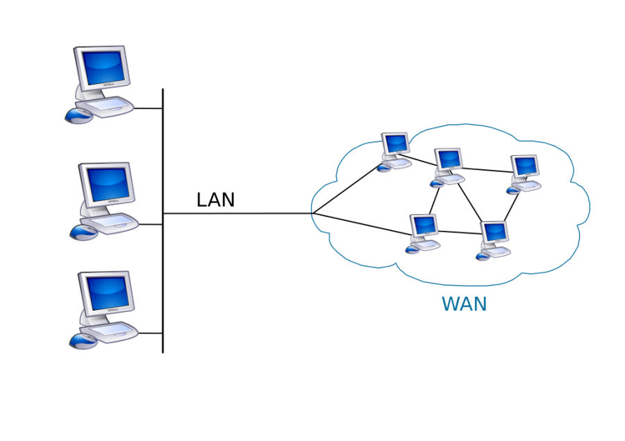
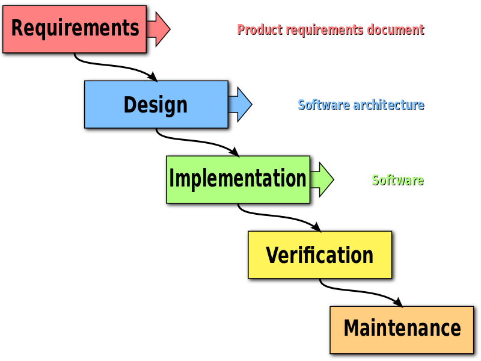
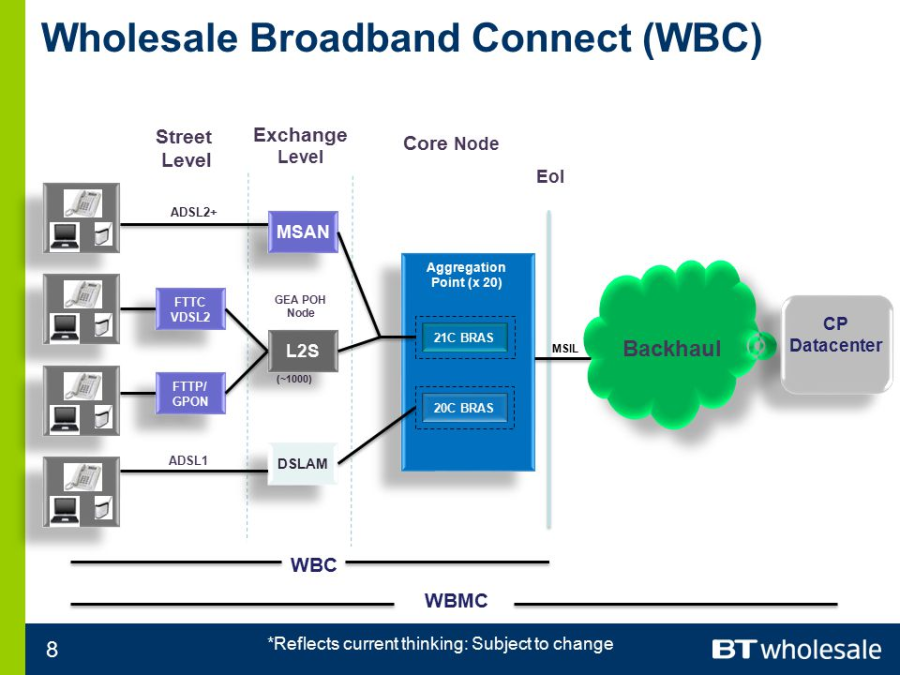
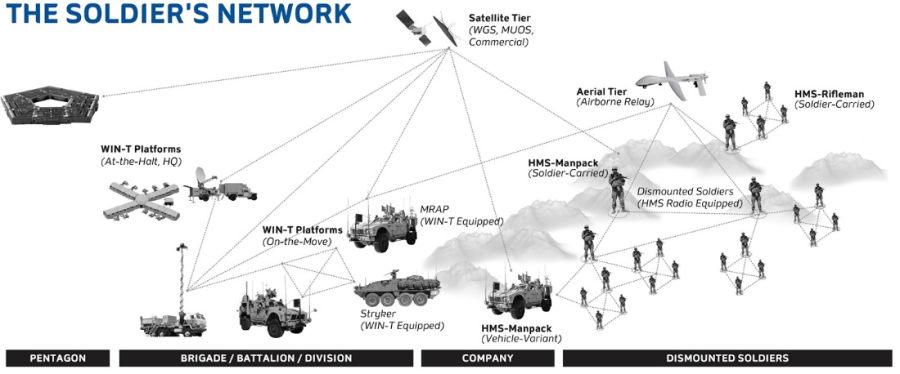
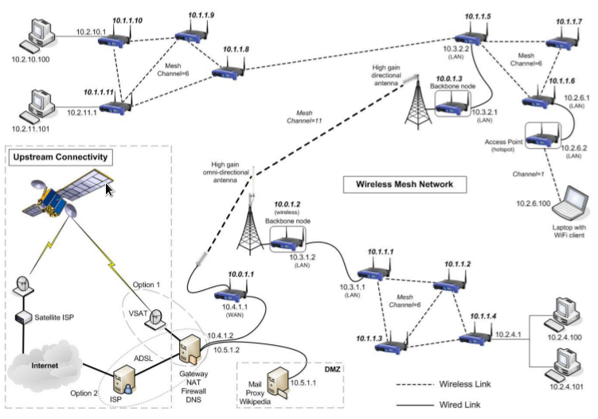
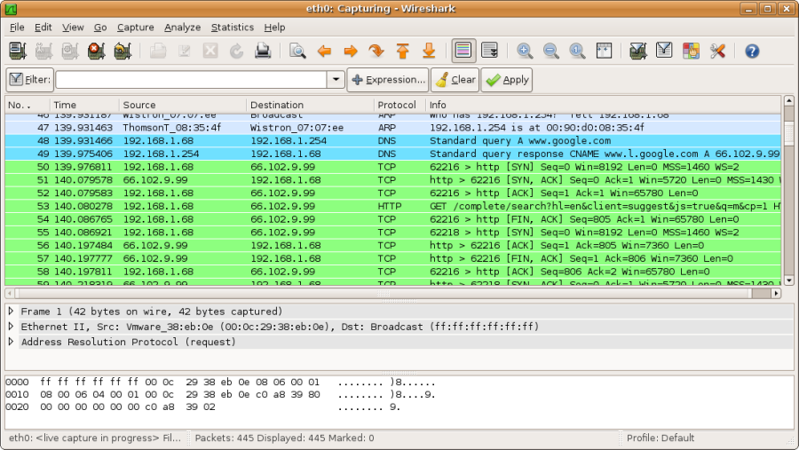
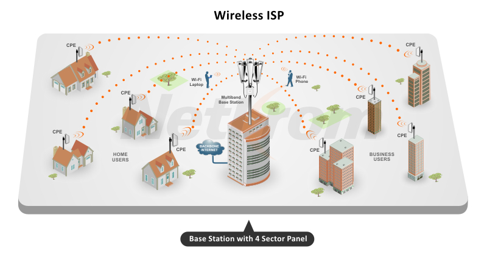
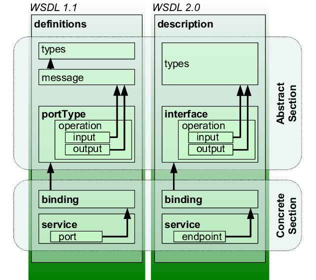

W3C |
World Wide Web Consortium |
The World Wide Web Consortium (W3C) is the main international standards organization for the World Wide Web (abbreviated WWW or W3).
Founded and currently led by Tim Berners-Lee, the consortium is made up of member organizations which maintain full-time staff for the purpose of working together in the development of standards for the World Wide Web. As of 24 September 2017, the World Wide Web Consortium (W3C) has 474 members. |
Walkthrough |
|
An informal review in which the author and one or more people meet to review an artifact with the intent of finding defects. |
WAN |
Wide Area Network |
A wide area network (WAN) is a telecommunications network or computer network that extends over a large geographical distance/place. Wide area networks are often established with leased telecommunication circuits.
Business, education and government entities use wide area networks to relay data to staff, students, clients, buyers, and suppliers from various locations across the world. In essence, this mode of telecommunication allows a business to effectively carry out its daily function regardless of location. The Internet may be considered a WAN.
Related terms for other types of networks are personal area networks (PANs), local area networks (LANs), campus area networks (CANs), or metropolitan area networks (MANs) which are usually limited to a room, building, campus or specific metropolitan area respectively.

|
WANET |
Wireless ad hoc network |
A wireless ad hoc network (WANET) or MANET (Mobile ad hoc network) is a decentralised type of wireless network. The network is ad hoc because it does not rely on a pre-existing infrastructure, such as routers in wired networks or access points in managed (infrastructure) wireless networks. Instead, each node participates in routing by forwarding data for other nodes, so the determination of which nodes forward data is made dynamically on the basis of network connectivity and the routing algorithm in use.
In the Windows operating system, ad-hoc is a communication mode (setting) that allows computers to directly communicate with each other without a router.
Wireless mobile ad hoc networks are self-configuring, dynamic networks in which nodes are free to move. Wireless networks lack the complexities of infrastructure setup and administration, enabling devices to create and join networks "on the fly" – anywhere, anytime. |
WAP |
Wireless Access Point |
In computer networking, a wireless access point (WAP), or more generally just access point (AP), is a networking hardware device that allows a Wi-Fi device to connect to a wired network. The AP usually connects to a router (via a wired network) as a standalone device, but it can also be an integral component of the router itself. An AP is differentiated from a hotspot, which is the physical location where Wi-Fi access to a WLAN is available. |
Waterfall |
|
The waterfall model is a relatively linear sequential design approach for certain areas of engineering design. In software development, it tends to be among the less iterative and flexible approaches, as progress flows in largely one direction ("downwards" like a waterfall) through the phases of conception, initiation, analysis, design, construction, testing, deployment and maintenance.
The waterfall development model originated in the manufacturing and construction industries; where the highly structured physical environments meant that design changes became prohibitively expensive much sooner in the development process. When first adopted for software development, there were no recognized alternatives for knowledge-based creative work
The Waterfall methodology came about by mistake due to a misunderstanding a 1970 paper which gave it as an example of a methodology along with a comment that states this is a risky method and invites failure. A US Department of Defense standard was published in 1985 with a methodology based on the 1970 paper and it then became widespread.

|
Waterfall Lifecycle |
|
An orderly sequence of phases from system concept to delivery with a review at the end of each phase. |
WBC |
Wholesale Broadband Managed |
The vanilla WBC product is the most flexible of the three. Crudely speaking, it is not that dissimilar to DataStream. But rather than having to rent capacity at every exchange from BT, the ISP has to install equipment ("have presence") at BT's WBC Aggregation Points (APs). There are twenty of these dotted around the country, and these are the same as the Core nodes discussed on the 21CN overview. One aggregation point will cover a region of the country, so an ISP would need to have presence at all twenty to cover the entire of the UK.

|
WBCC |
Wholesale Broadband Connect Converge |
There is relatively little public information available about this product. It is known to roll the voice and broadband products in to a package, with BT providing the ISP a single bill for both. Given that this product will again be based on WBC, one can only assume that the same product options and QoS would also be available. |
WBMC |
Wholesale Broadband Managed Connect |
The IPSC replacement
In the same way that the vanilla WBC product could be seen as a replacement for DataStream, WBMC can be seen as a replacement for IPStream. This product is an end-to-end product, encompassing the EUA (End User Access), presence at the APs (Aggregation Points), EPs (Extension Paths) and an MSIL (Although the MSIL is purchased separately by the ISP). Ultimately this saves the ISP having to manage and maintain presence at the 20 WBC nodes (APs), which would involve considerable initial outlay and ongoing investment. The backhaul is also managed by BT entirely. On the other side of the coin this means the ISP is locked in to a BT platform - which may not necessarily be the cheapest - and it certainly does not offer all of the flexibility that an ISP using WBC would receive. That said, all of the same products and QoS options are available on WBMC as on WBC. |
W-CDMA |
Wideband Code-division multiple access |
W-CDMA or WCDMA (Wideband Code Division Multiple Access), along with UMTS-FDD, UTRA-FDD, or IMT-2000 CDMA Direct Spread is an air interface standard found in 3G mobile telecommunications networks. It supports conventional cellular voice, text and MMS services, but can also carry data at high speeds, allowing mobile operators to deliver higher bandwidth applications including streaming and broadband Internet access.[5]
W-CDMA uses the DS-CDMA channel access method with a pair of 5 MHz wide channels. In contrast, the competing CDMA2000 system uses one or more available 1.25 MHz channels for each direction of communication. W-CDMA systems are widely criticized for their large spectrum usage, which delayed deployment in countries that acted relatively slowly in allocating new frequencies specifically for 3G services (such as the United States). |
Weekly Individual Plan |
|
A mechanism for individuals to create miniature milestone plan on a weekly basis. See CxGuide_WeeklyIndividualPlan. |
WEP |
Wired Equivalent Privacy |
Wired Equivalent Privacy (WEP) is a security algorithm for IEEE 802.11 wireless networks. Introduced as part of the original 802.11 standard ratified in 1997, its intention was to provide data confidentiality comparable to that of a traditional wired network. WEP, recognizable by its key of 10 or 26 hexadecimal digits (40 or 104 bits), was at one time widely in use and was often the first security choice presented to users by router configuration tools.
In 2003 the Wi-Fi Alliance announced that WEP had been superseded by Wi-Fi Protected Access (WPA). In 2004, with the ratification of the full 802.11i standard (i.e. WPA2), the IEEE declared that both WEP-40 and WEP-104 have been deprecated.
WEP was the only encryption protocol available to 802.11a and 802.11b devices built before the WPA standard, which was available for 802.11g devices. |
What Requirement |
|
Synonym for Functional Requirement |
Why Requirement |
|
Synonym for Business Requirement |
Wi-Fi |
|
Wi-Fi or WiFi is technology for radio wireless local area networking of devices based on the IEEE 802.11 standards. Wi Fi is a trademark of the Wi-Fi Alliance, which restricts the use of the term Wi-Fi Certified to products that successfully complete interoperability certification testing.
Devices that can use Wi-Fi technology include desktops and laptops, video game consoles, smartphones and tablets, smart TVs, digital audio players and modern printers. Wi-Fi compatible devices can connect to the Internet via a WLAN and a wireless access point. Such an access point (or hotspot) has a range of about 20 meters (66 feet) indoors and a greater range outdoors. Hotspot coverage can be as small as a single room with walls that block radio waves, or as large as many square kilometres achieved by using multiple overlapping access points.
Depiction of a device sending information wirelessly to another device, both connected to the local network, in order to print a document
Wi-Fi most commonly uses the 2.4 gigahertz (12 cm) UHF and 5.8 gigahertz (5 cm) SHF ISM radio bands, these bands are subdivided into multiple channels. Each channel can be time-shared by multiple networks. These wavelengths work best for line-of-sight. Many common materials absorb or reflect them, which further restricts range, but can tend to help minimise interference between different networks in crowded environments. At close range, some versions of Wi-Fi, running on suitable hardware[disambiguation needed] can achieve speeds of over 1 Gbps.
Anyone within range with a wireless network interface controller can attempt to access a network; because of this, Wi-Fi is more vulnerable to attack (called eavesdropping) than wired networks. Wi-Fi Protected Access is a family of technologies created to protect information moving across Wi-Fi networks and includes solutions for personal and enterprise networks. Security features of Wi-Fi Protected Access have included stronger protections and new security practices as the security landscape has changed over time. |
Wiki |
|
A wiki is a website on which users collaboratively modify content and structure directly from the web browser. In a typical wiki, text is written using a simplified markup language and often edited with the help of a rich-text editor.
A wiki is run using wiki software, otherwise known as a wiki engine. A wiki engine is a type of content management system, but it differs from most other such systems, including blog software, in that the content is created without any defined owner or leader, and wikis have little inherent structure, allowing structure to emerge according to the needs of the users. There are dozens of different wiki engines in use, both standalone and part of other software, such as bug tracking systems. Some wiki engines are open source, whereas others are proprietary. Some permit control over different functions (levels of access); for example, editing rights may permit changing, adding, or removing material. Others may permit access without enforcing access control. Other rules may be imposed to organize content. |
WiMAX |
Worldwide Interoperability for Microwave Access |
WiMAX (Worldwide Interoperability for Microwave Access) is a family of wireless communication standards based on the IEEE 802.16 set of standards, which provide multiple physical layer (PHY) and Media Access Control (MAC) options.
The name "WiMAX" was created by the WiMAX Forum, which was formed in June 2001 to promote conformity and interoperability of the standard, including the definition of predefined system profiles for commercial vendors. The forum describes WiMAX as "a standards-based technology enabling the delivery of last mile wireless broadband access as an alternative to cable and DSL". IEEE 802.16m or WirelessMAN-Advanced was a candidate for the 4G, in competition with the LTE Advanced standard.
WiMAX was initially designed to provide 30 to 40 megabit-per-second data rates, with the 2011 update providing up to 1 Gbit/s for fixed stations |
WIN-T |
Warfighter Information Network - Tactical |
WIN-T is the U.S. Army's tactical network backbone, providing secure voice and data communications for soldiers on the battlefield without the need for fixed infrastructure. By connecting soldiers with their commanders, WIN-T is changing the way the U.S. Army fights by providing life-saving information on-the-move, anywhere in the world. WIN-T enables soldiers to:
- Stream real-time video over the network
- View a topographical map of friendly forces
- Send texts requesting medical assistance
- Digitally call for artillery support
- Access mission command apps like CPOF and TIGR
WIN-T INCREMENT 1: COMMUNICATIONS AT-THE-HALT
Originally known as the Joint Network Node Network (JNN-N) program, WIN-T Increment 1 (Inc. 1) began fielding in 2004 to support combat missions during Operation Enduring Freedom and Operation Iraqi Freedom.
With WIN-T Inc. 1, for the first time in history, the soldiers on the battlefield had a high-speed, interoperable voice and data communications network at the battalion level.
WIN-T INCREMENT 2: COMMUNICATIONS ON-THE-MOVE
The Army's 10th Mountain Division was the first to field WIN-T Inc. 2 new capabilities when they deployed for Afghanistan in July 2013. WIN-T Inc. 2's unique value was immediately recognized, as it provided soldiers with communications even as fixed infrastructure was removed.
The Tactical Communication Nodes in Inc. 2 took the first step in providing a mobile infrastructure on the battlefield. This includes mobile Point Of Presence systems (installed on select vehicles at battalion levels and above, which include four companies of up to 200 soldiers and about 10 to 30 vehicles each), vehicle wireless packages, and the Soldier Network Extension (for Company-level connectivity).
Increment 2 enables mission command from brigade to division to company through a completely ad-hoc, self-forming network. Commanders and select staff now have the ability to maneuver anywhere on the battlefield and maintain connectivity to the network, without the need to stop and set up communications, making them vulnerable to attack.

|
Wireless Mesh Network |
|

A wireless mesh network (WMN) is a communications network made up of radio nodes organized in a mesh topology. It is also a form of wireless ad hoc network.
A mesh refers to rich interconnection among devices or nodes. Wireless mesh networks often consist of mesh clients, mesh routers and gateways. Mobility of nodes is less frequent. If nodes were to constantly or frequently move, the mesh will spend more time updating routes than delivering data. In a wireless mesh network, topology tends to be more static, so that routes computation can converge and delivery of data to their destinations can occur. Hence, this is a low-mobility centralized form of wireless ad hoc network. Also, because it sometimes relies on static nodes to act as gateways, it is not a truly all-wireless ad hoc network.
The mesh clients are often laptops, cell phones and other wireless devices while the mesh routers forward traffic to and from the gateways which may, but need not, be connected to the Internet. The coverage area of the radio nodes working as a single network is sometimes called a mesh cloud. Access to this mesh cloud is dependent on the radio nodes working in harmony with each other to create a radio network. A mesh network is reliable and offers redundancy. When one node can no longer operate, the rest of the nodes can still communicate with each other, directly or through one or more intermediate nodes. Wireless mesh networks can self form and self heal. Wireless mesh networks work with different wireless technologies including 802.11, 802.15, 802.16, cellular technologies and need not be restricted to any one technology or protocol. |
Wireless Repeater |
|
A wireless repeater (also called wireless range extender) takes an existing signal from a wireless router or wireless access point and rebroadcasts it to create a second network. When two or more hosts have to be connected with one another over the IEEE 802.11 protocol and the distance is too long for a direct connection to be established, a wireless repeater is used to bridge the gap. It can be a specialized stand alone computer networking device. Also, some Wireless network interface controllers (WNIC)s optionally support operating in such a mode. Those outside of the primary network will be able to connect through the new "repeated" network. However, as far as the original router or access point is concerned, only the repeater MAC is connected, making it necessary to enable safety features on the wireless repeater. Wireless repeaters are commonly used to improve signal range and strength within homes and small offices. |
Wireshark |
|
Wireshark is a free and open source packet analyzer. It is used for network troubleshooting, analysis, software and communications protocol development, and education. Originally named Ethereal, the project was renamed Wireshark in May 2006 due to trademark issues.

|
WISP |
Wireless ISP |
A wireless Internet service provider (WISP) is an Internet service provider with a network based on wireless networking. Technology may include commonplace Wi-Fi wireless mesh networking, or proprietary equipment designed to operate over open 900 MHz, 2.4 GHz, 4.9, 5, 24, and 60 GHz bands or licensed frequencies in the UHF band (including the MMDS frequency band), LMDS, and other bands from 6Ghz to 80Ghz.

|
WLR |
Wholesale Line Rental |
Wholesale line rental (WLR) is a service in which a telecommunications operator takes control of all the connections made through a telephone line from the native operator and collects the subscription fee from the subscribers.
With WLR the alternative telecoms provider buys a wholesale product from the incumbent (usually in conjunction with a wholesale call product such as CPS) and is then able to produce a single bill for the end user covering calls and line rental. Broadband services can also be provided by the WLR operator (and included in a single bill) if a separate wholesale DSL product is purchased from the incumbent, but this is optional. |
WMA |
Windows Media Audio |
Windows Media Audio (WMA) is the name of a series of audio codecs and their corresponding audio coding formats developed by Microsoft. It is a proprietary technology that forms part of the Windows Media framework. WMA consists of four distinct codecs. The original WMA codec, known simply as WMA, was conceived as a competitor to the popular MP3 and RealAudio codecs. WMA Pro, a newer and more advanced codec, supports multichannel and high resolution audio. A lossless codec, WMA Lossless, compresses audio data without loss of audio fidelity (the regular WMA format is lossy).[3] WMA Voice, targeted at voice content, applies compression using a range of low bit rates. |
Work Breakdown Structure |
WBS |
A representation of all work (activities and tasks) on a project, decomposed into work packages. The WBS provides the fundamental project management view of a project. Smaller projects may capture their WBS implicitly in work plans or detailed schedules. Larger projects will often define the WBS as a separate artifact. |
Work Item |
|
Synonym for artifact. |
Work Package |
WP |
A leaf element of a WBS, often defined as a tangible deliverable. Bottom-up project estimation and planning is driven by work packages and is often captured in a work plan. Work packages are normally broken down into activities and tasks for task estimation and detailed scheduling. |
Work Plan |
|
A key project artifact that captures work packages along with their task estimates. Used to plan, track, and control detailed execution. See CxGuide_EarnedValueWorkPlan. |
Work Product |
|
Synonym for artifact. |
WPA2 |
Wi-Fi Protected Access |
Wi-Fi Protected Access (WPA) and Wi-Fi Protected Access II (WPA2) are two security protocols and security certification programs developed by the Wi-Fi Alliance to secure wireless computer networks. The Alliance defined these in response to serious weaknesses researchers had found in the previous system, Wired Equivalent Privacy (WEP).
WPA (sometimes referred to as the draft IEEE 802.11i standard) became available in 2003. The Wi-Fi Alliance intended it as an intermediate measure in anticipation of the availability of the more secure and complex WPA2, which became available in 2004 and is a common shorthand for the full IEEE 802.11i (or IEEE 802.11i-2004) standard. |
WPS |
Wi-Fi Protected Setup |
Wi-Fi Protected Setup (WPS; originally, Wi-Fi Simple Config) is a network security standard to create a secure wireless home network.
Created by the Wi-Fi Alliance and introduced in 2006, the goal of the protocol is to allow home users who know little of wireless security and may be intimidated by the available security options to set up Wi-Fi Protected Access, as well as making it easy to add new devices to an existing network without entering long passphrases. Prior to the standard, several competing solutions were developed by different vendors to address the same need. |
write-only code |
|
code that is hard to read. |
WS-BPEL |
Web Services Business Process Execution Language |
BPEL was developed to address the differences between programming in the large and programming in the small. This term is also known as Web Services Business Process Execution Language (WS-BPEL), and is sometimes written as business process execution language for Web Services. |
WSDL |
Web Services Description Language |
The Web Services Description Language is an XML-based interface definition language that is used for describing the functionality offered by a web service. The acronym is also used for any specific WSDL description of a web service (also referred to as a WSDL file), which provides a machine-readable description of how the service can be called, what parameters it expects, and what data structures it returns. Therefore, its purpose is roughly similar to that of a type signature in a programming language.
The current version of WSDL is WSDL 2.0. The meaning of the acronym has changed from version 1.1 where the "D" stood for "Definition".

<?xml version="1.0" encoding="UTF-8"?><description xmlns="http://www.w3.org/ns/wsdl" xmlns:tns="http://www.tmsws.com/wsdl20sample" xmlns:whttp="http://schemas.xmlsoap.org/wsdl/http/"xmlns:wsoap="http://schemas.xmlsoap.org/wsdl/soap/"targetNamespace="http://www.tmsws.com/wsdl20sample">
<documentation>This is a sample WSDL 2.0 document. </documentation>
<!-- Abstract type --><types><xs:schema xmlns:xs="http://www.w3.org/2001/XMLSchema"xmlns="http://www.tmsws.com/wsdl20sample"targetNamespace="http://www.example.com/wsdl20sample"> <xs:element name="request"> ... </xs:element><xs:element name="response"> ... </xs:element></xs:schema></types>
<!-- Abstract interfaces --><interface name="Interface1"><fault name="Error1" element="tns:response"/><operation name="Get" pattern="http://www.w3.org/ns/wsdl/in-out"><input messageLabel="In" element="tns:request"/><output messageLabel="Out" element="tns:response"/></operation></interface>
<!-- Concrete Binding Over HTTP -->
<!-- Web Service offering endpoints for both bindings--><service name="Service1" interface="tns:Interface1"><endpoint name="HttpEndpoint" binding="tns:HttpBinding" address="http://www.example.com/rest/"/><endpoint name="SoapEndpoint" binding="tns:SoapBinding" address="http://www.example.com/soap/"/></service></description>
|
{kind=link}
{kind=link}
{kind=link}
{kind=link}
{kind=link}
{kind=link}
{kind=link}
{kind=link}